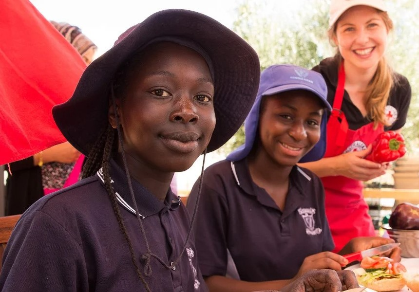
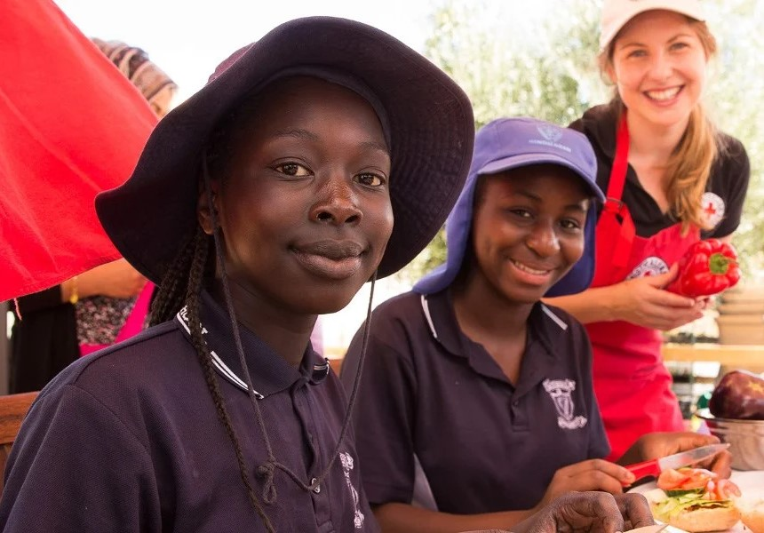

Making a difference
one life at a time
Welcome to Hugh Mongus Hearts, the premier volunteering platform dedicated to uniting blood donation organisations under one mission: saving lives through the gift of blood. At Hugh Mongus Hearts, we understand the profound impact that a single blood donation can have, and we are committed to making it easier than ever for volunteers to contribute to this life-saving cause.
Our Mission
Hugh Mongus Hearts was founded on the belief that together, we can make a greater difference. Our mission is to streamline the blood donation process by connecting a diverse network of blood banks, hospitals, and charitable organisations. By providing a centralized platform, we aim to maximise the efficiency of blood collection and distribution, ensuring that those in need receive timely and sufficient support.
Get Involved
Whether you are a seasoned donor or looking to make your first donation, Hugh Mongus Hearts welcomes you with open arms. Sign up today, find a donation center near you, and join us in our mission to make a monumental difference in the lives of those in need. Together, we can ensure that every heartbeat continues to thrive.
Hugh Mongus Hearts - because every drop counts.
 
